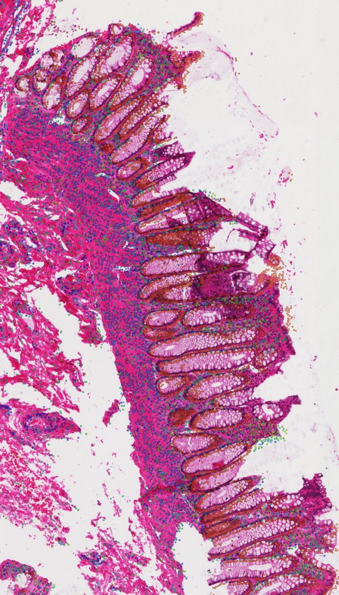

Cell types on the H&E, with an agent at your side.
STAnnotator annotates and analyzes imaging spatial transcriptomics (Xenium, CosMx, MERSCOPE and other platforms) directly on the tissue image. Tell it what you know in plain sentences. Every change the agent proposes waits in the app until you click Accept.
How it works
From the instrument's output to a notebook you can rerun
Every step happens in one window, on the image. Each change becomes a version you can go back to.
- 1
Import
Xenium, CosMx (AtoMx flat files) and MERSCOPE output, h5ad, or Seurat and SpatialExperiment
.rdsfiles, read without R. Add the H&E and its registration, or let the agent align it; bring regions drawn in QuPath; filter cells and genes. - 2
Annotate
From a marker gene list, a labeled single-cell reference, or an annotation you already have. No marker list? Start from a built-in list for 12 organs, pruned to your gene panel.
- 3
Refine in words
Draw regions on the tissue and say what you know: priors, corrections, a cluster to split. Each change opens in a review window with the cells it affects; you accept or dismiss it.
- 4
Analyze
PCA, UMAP and Leiden, niches, composition, DE genes and cell–cell communication, for one slice or several together.
- 5
Review
Agent Review checks one part of the analysis, tests its own advice against the data and the H&E, and shows only what holds up.
- 6
Export
The cell table, the registration, figures as PDF, a Jupyter notebook that reproduces the analysis without the app, or the whole annotation as one
.stannotfile.
Plain-language priors
Say what a pathologist would say
Knowledge about where cells belong becomes a rule the model can use. The agent reads your sentence and proposes the change; the app shows it to you, and nothing happens until you accept it.
regiononly Epithelial lineage, inside the region you drew and named mucosa.
The change is waiting in the app with the cells it would relabel.
| Kind | Condition | Example |
|---|---|---|
| region | The cell lies in one of the regions you drew | Epithelial cells only in the mucosa |
| depth | Within a distance of the epithelium | Goblet cells within 30 µm of the epithelium |
| neighborhood | A share of the 15 nearest cells are given types | Tfh cells next to B cells |

Analyses
The analyses you would run next, in the same window
PCA, UMAP, Leiden
Select cells on the UMAP and see them light up on the tissue. Harmony integration for several slices.
Cellular neighborhoods
Niches shared across slices, which the agent names from the H&E and their composition.
Composition and DE genes
Compare regions, niches, slices or conditions, with dot plots of the top genes.
Cell–cell communication
Ligand–receptor interactions as bubble and circle plots. Senders and receivers shown together on the map.
Several slices at once
Healthy and disease, time courses, replicates: one annotation model and one embedding for all slices. Put any samples into a project, or move slices between projects.
Every sample side by side
Each sample over its image, colored the same way. Tick legend entries to show only those cells on all samples, and save the panel as one PDF.
Share an annotation
One .stannot file holds every version with its regions, priors and corrections, niches, embeddings and the last Compare and Signaling results.
No registration file needed
The agent finds the section on the slide, its rotation and mirroring, then moves every cell onto its nucleus.
Measured
Tested on published atlases
Numbers from the validation runs in the user guide. Dataset labels were used only to score the results afterwards, never as input.
~1minute
to annotate a 356,629-cell section
On the CPU of a laptop, with 3.3 GB of memory. A correction or a local re-clustering takes a few seconds.
SCP2927 IBD Xenium atlas, section 147328
0.5µm
median distance to the reference registration
Align with Agent searched the slide in 8 s and refined in 3 s, on a slide with two sections rotated 180°. The registration file shipped with the data was 13 µm off.
SCP2927, section 147328
Agent Review on an ulcerative colitis section
The review found 15,514 unassigned cells expressing CD177, CSF3R and S100A12: neutrophils missing from the marker list. With the revised list:
Lineage agreement with the dataset's labels. Unassigned cells fell from 15,514 to 195.
SCP2927, section 146685
87–91%
lineage agreement across a mouse colitis time course
Four MERFISH slices (healthy, DSS day 3, 9 and 21; 66,818 cells) annotated together in about 15–40 s. The day-21 slice, with few transcripts per cell, agreed less (46%).
Cadinu et al., Cell 2024, MERFISH, 990 genes
Where it runs
Your data stays where it is
On your Mac
- Data
- Your computer
- Window
- Your computer
- Needs
- Apple silicon, 8 GB of memory or more, Claude Code logged in once
On a server, over SSH
- Data
- The server; nothing is copied except what you export
- Window
- Your computer, through an SSH tunnel; no port is opened on the server
- Needs
- The app on your Mac, STAnnotator on the server, SSH login without a password
The agent is your own Claude Code, running with your own Claude account. STAnnotator never asks you to sign in. The agent works through the app's tools, which compute every number it reports.
Download
Get STAnnotator
STAnnotator for Mac
Version 0.2.14
- Open
STAnnotator.dmgand drag STAnnotator to Applications. - Install Claude Code and log in once, so that
claudeworks in Terminal. - Start STAnnotator and click Import…. Data and annotations go to
~/stagent.
All releases and their notes are on the releases page. Linux and Windows: install from source.
From source
Linux, Windows and developers. Needs uv.
git clone https://github.com/caokai1073/STAnnotator.git && cd STAnnotator
uv venv .venv --python 3.12
uv pip install --python .venv/bin/python -e ".[app]"
.venv/bin/stagent app # the window; --browser for a browser tabOn a server
Install the same version as the app on your Mac, then click This computer → A server over SSH in the app.
git clone https://github.com/caokai1073/STAnnotator.git ~/STAnnotator && cd ~/STAnnotator
uv venv .venv --python 3.12
uv pip install --python .venv/bin/python -e .
# the command to enter in the app: ~/STAnnotator/.venv/bin/stagentEvery control and method is described in the user guide.